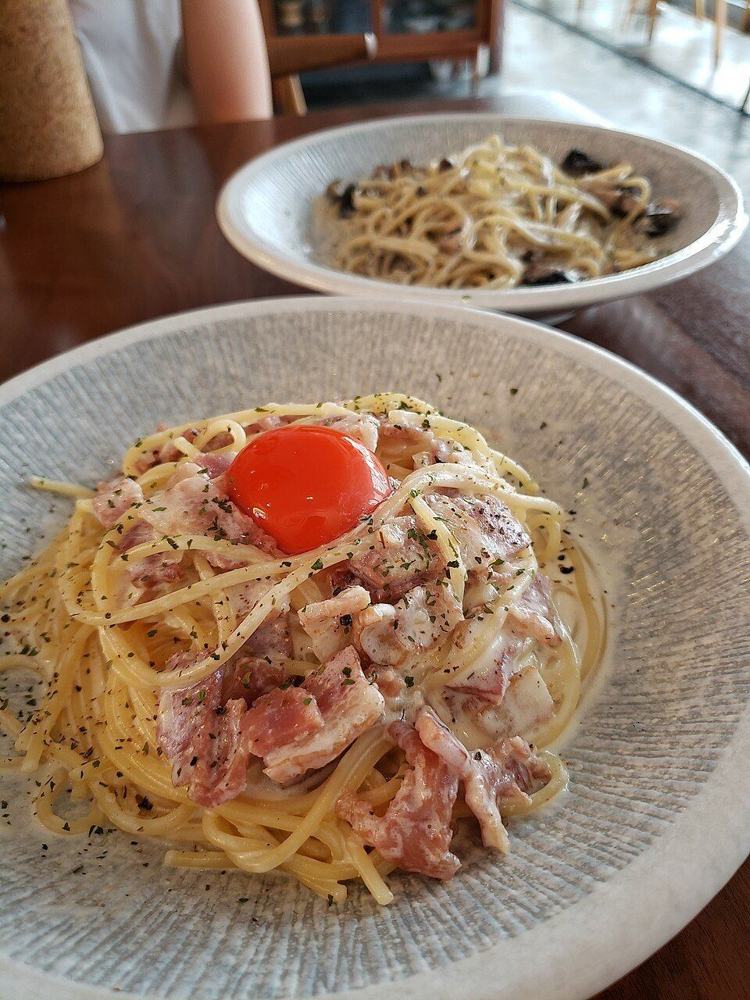

Trattoria Sorriso
こだわり
毎朝の仕込みから、一皿まで。
01 PASTA
毎朝、打つ。

パスタは毎朝、その日に使う分だけを打ちます。もっちりとした歯ごたえは、ソースとよくからみます。
02 VEGETABLES
野菜は、近所から。

地元の農家さんから届く野菜を、できるだけそのまま。塩とオリーブオイルで、素材の味を引き出します。(見本の文章です)
03 WINE
気軽に、ワインを。

料理に合わせて、飲みやすい一本をご案内します。迷ったら、遠慮なくお声がけください。